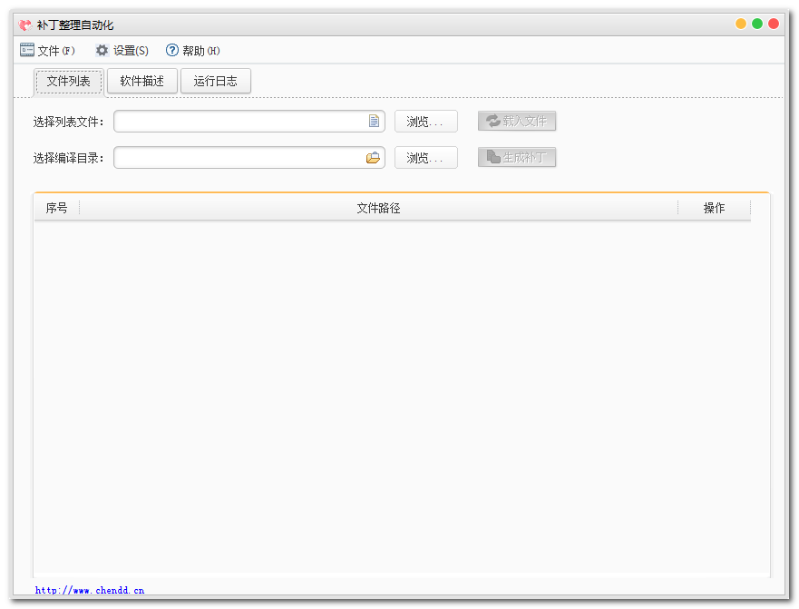
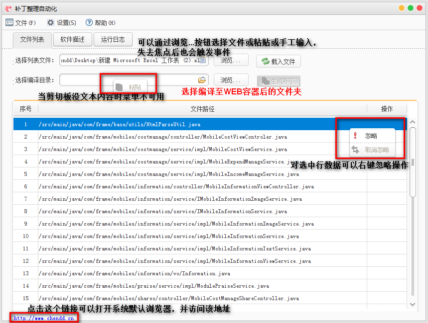

我的增量补丁整理软件
章接前文，整理投产补丁是现在时常会做的事情，不仅仅是我个人，基本上整个组的，别的组的，还有你们指不定也是如此，早就琢磨着写这么一款软件去实现自动生成补丁包的功能，核心处理是根据整理出来的补丁文件路径集去应用部署编译后的web容器目录下复制和生成新文件的过程，配方还是搞swing + beautyeye_lnf（主题），先从预览效果图开始，接着用功能点说明图来详细说明，你值得拥有。
软件运行目录中除了“补丁整理自动化.exe”为执行文件外，还包含config与logs目录，其中config目录为软件运行的参数配置文件（包括conofig.properties和replace.properties）；logs目录则是软件运行的日志记录，采用log4j组件实现（20M一个文件，一共可备份100个，这些不是重点），参考如下图：
软件打开运行时有个根据eclipse启动效果一样的无状态的窗口显示加载进度（在这里没啥用，因为没有一些需要提前初始化好的资源），进度100%后将显示主窗口，参考如下图：




解析实现分析：
在传统的WEB工程中，代码在提交至SVN后的路径为%PROJECT_HOME%/src/package/java和%PROJECT_HOME%/WebContent/jsp or css/等路径下，所有我们只需要根据这些路径的前缀解析即可，另外不排除还能有特殊情况，在实现时考虑了其它情况的实现，即按照路径直接解析输出，参考如下图所示：
整理java文件实现：
读取所有路径下的/src前缀，其中以.java文件结尾的文件需要特殊处理，将路径转换为对应的class文件，且需要处理匿名内部类的情况，命名规则为公开类类名$1N.class；如果在该路径下且不是.java文件结尾的配置文件类的文件则同样是将路径转为/WEB-INF/classes目录，去该目录中获取。
整理jsp等资源文件实现：
读取这些文件时，它们都是以WebContent（WebRoot）路径为前缀开始的，解析这种路径时需要将这个前缀给替换为“”，直接在与WEB-INF统计目录下开始拷贝文件，直接拿文件路径去寻找，找到即拷贝。
整理其它类型文件：
由于各个系统的特殊性，可能除了/src与/WebContent目录外的其它目录，如在src目录统计存在一些项目的帮助文档、数据库脚本等这些文件时，如果用户在列表中存在即给生成。
鉴于考虑如上的3中实现，特使用3个实现类实现，SrcImpl、WeRootImpl（解析路径规则为匹配以/src路径开始的路径），当它俩都匹配不上时则采用OtherImpl去实现，可见“窗口设置”功能中的具体参数，提供设置class文件匹配规则和WebContent规则及其实现类，其它实现规则又支持自定义的路径字符串替换（后续加上的），基本上满足各类需求，当然这些生成的补丁文件均不包含被用户设置了已忽略的文件部分。
支持maven项目的文件路径结果：
由于目前的使用场景为普通WEB项目，故在实现时并未考虑到maven项目的提交至SVN后的路径结构，不过之前的整理实现也是可以整理出java文件或jsp这些补丁的，需要我们在参数设置处将/src修改为/src/main/java，同时将/WebContent修改为/src/main/webapp，虽然这两项参数可以通过软件设置，并且只需要设置一次，但是考虑到鉴于这种方式的配置文件没的搞，因为配置文件常常位于/src/main/resources目录，使用OtherImpl解析时在WEB-INF同级目录并没存在这些文件，只有让用户手动的调整SVN复制出来的补丁整理的路径，所以基于这个问题导致无法完美的支持maven项目，才有了一个小小的更改，又加了一个参数解析替换功能，为自定义解析路径时的替换参数功能，使得用户在对于不同的路径时可以自己定义替换规则，略微增加替换规则就可以支持maven工程，这点还是非常令人欣喜的。
本软件中涉及到的详细知识点：
Swing实现一个无关闭窗口的效果（或eclipse启动效果，请在本站内搜索）；
Swing的Mac风格窗口皮肤的使用；
软件运行时的图片路径访问的实现；
软件运行于含有中文或空格的路径中的路径实现；
相关的配置文件放置与软件exe的同级目录的访问；
Log4j的运行输出目录为软件的运行目录；
含有倒计时功能的alert提示窗口；
系统最小化至托盘的实现；
最小化托盘实现时的鼠标悬浮提示和右键菜单的乱码问题解决；
鼠标点击超链接打开网页的实现；
右键功能菜单的实现；
读取csv、txt、xls、xlsx的实现；
使用exe4j将jar文件打包成exe的过程；
本软件基本在各种情况下进行了验证，如在正式使用时可先按需手工整理一份补丁，再采用软件生成一份，通过beyond compare（设置忽略时间戳、二进制比较规则）进行对比，可以查看到生成出来的补丁具体有没有问题，是否符合要求等。特别需要注意在生成补丁前最好先更新最新的代码，并进行编译输出至WEB容器中。
软件下载：
……